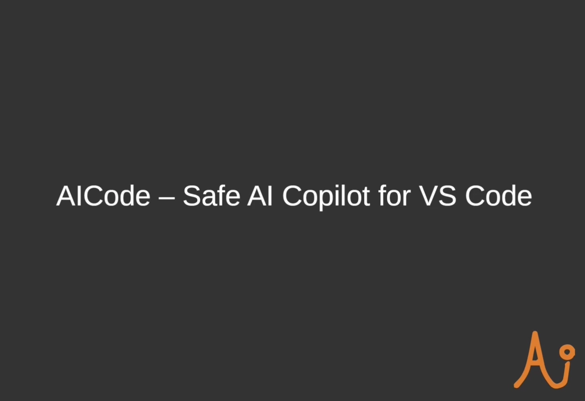
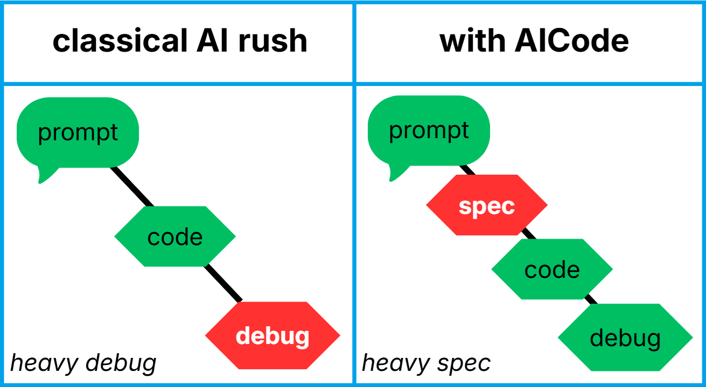
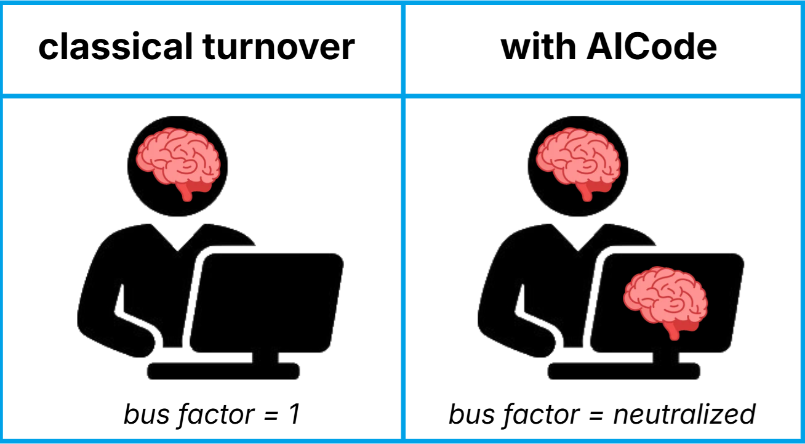
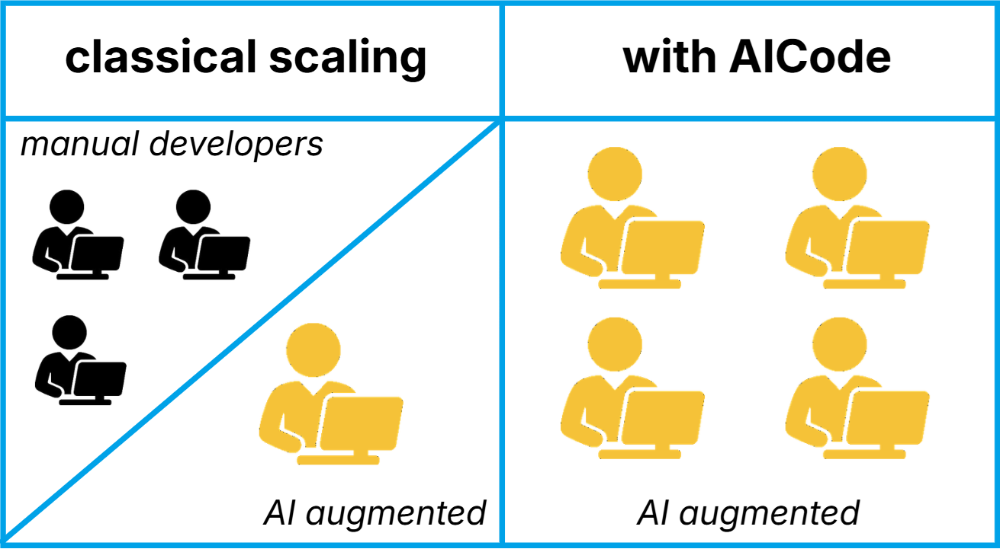
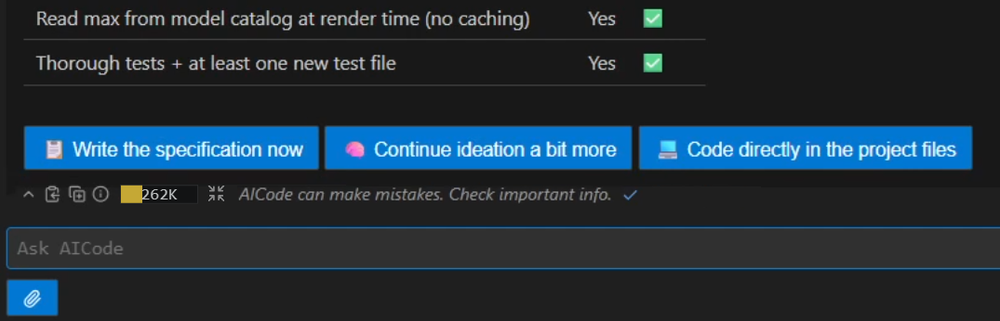
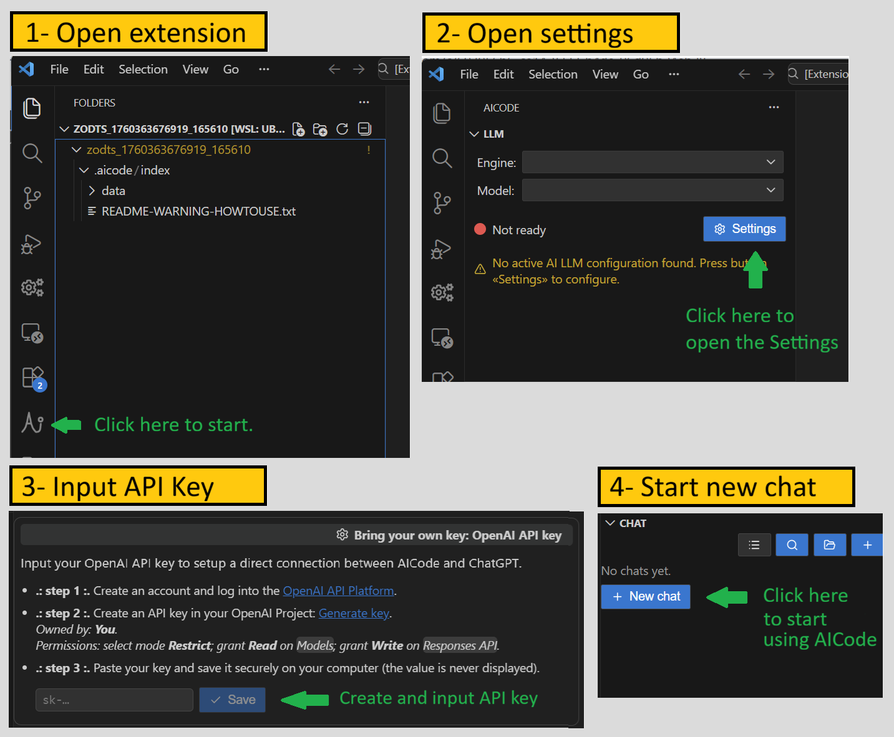

AICode is the only AI coding assistant specifically designed to maintain complex legacy enterprise software, and to ensure absolute data ownership. It constrains the model to respect your project's global context, and catches AI mistakes before they reach your codebase.
AICode itself is 500,000 lines of TypeScript code, generated and maintained by a solo developer using AICode. Test it two days on your dirtiest legacy codebase, the one nobody dares touch. Then contact us.

Ideate → Specify → Refine → Code → Verify. An authentic session, accelerated.
Junior-grade architecture that accumulates technical debt from day one
Narrow-focus changes that break invariants and will end in debug hells
Structured specification reviewed and approved by you before a single line is written
Silent regressions that look like the real thing, caught too late
Refine + Verify loops that audit the spec and the generated code for design flaws
No project memory: the AI forgets your constraints on every new prompt
Project map: the model understands global architecture, with far fewer hallucinations
Auto-edits written directly to disk before you can review them
Reviewable patches in a virtual workspace. You accept changes file by file, line by line
MCP authorization gates by tool
Unit tests that validate and hide broken code
Hallucinations dressed as confidence
Honest by design: the model won't bluff when context is missing. It will ask
True developer story: A top-tier AI coding agent generated the messaging bus for a production application in thirty minutes. Impressive. The bus was optimized with eight message categories, varying by argument count, whether a response was required, async or sync execution. It was a nice PR, with green unit tests, ready to merge. The kind of work that makes you say "Wow".
One month later, after connecting several services on top of this architecture, I understood the bus was unmaintainable. Every new integration required considering all eight variants. When confronted on the design, the model defended it: "You save 2-3 instructions here, 1 CPU cycle there". Meanwhile, the entire project was sinking under the weight of its own complexity.
It took three weeks of refactoring to enforce a single format: one single RPC contract, one single message type. The model pushed back: "You're wasting resources, it'll be slow". In reality, 1ms of overhead at runtime is invisible in production. What the model couldn't measure, and therefore ignored, is that the scarcest resource isn't CPU; it's human capacity to understand and maintain code.
AICode was built from that lesson. The Specify and Refine stages exist to intercept exactly this kind of decision before it gets coded, connected, and propagated across the entire architecture. Uncontrolled generative AI is a disease. AICode is the antidote.
Generative AI accelerates output, but without strict constraints, it accelerates technical debt. AICode transforms unpredictable AI coding into a deterministic production chain, converting it into a measurable financial asset.

The golden rule of cost: A bug caught during the specification phase is 100x cheaper than a bug found in production. AICode shifts the effort from late debugging to proactive specification. By proposing an interactive Ideate → Specify → Refine loop, AICode catches architectural errors before code generation, neutralizing technical debt at the source.

When a senior developer leaves, 80% of the undocumented legacy context leaves with them. AICode’s 5D Index captures and freezes this architectural understanding. Project memory becomes an exploitable, persistent asset, immune to turnover.

AICode turns rare expert-level prompt engineering knowledge into a software commodity, making it easy to scale teams. Unlike standard AI tools that represent a major risk of code pollution, AICode’s specialized workflow allows AI acceleration to be safely deployed across entire groups.
Replace 20 outsourced junior developers billed €800/day with 1 AICode license + 3 in-house engineers at €60k/year.
AICode is adaptive: it detects your intent and scales the rigor accordingly. A simple fix stays frictionless. For complex tasks, it enforces the full pipeline, automatically.
Interactive conversation until both the model and developer converge on a shared, precise understanding of the task.
The AI generates a formal specification from the ideation session. You read it, correct misunderstandings, and lock the design.
The AI audits the spec against the real codebase, as many times as you want. Each pass catches more design flaws before a single line is written.
The AI generates code in a virtual workspace. You review and accept changes file by file. Nothing is written to disk without your approval.
Post-implementation audit: the AI checks every line against the spec, reports non-compliance, and proposes targeted adjustments.
Rigorous by design. Invisible by default. Zero-friction adoption.
How to enforce a safety harness without slowing down developers? AICode's answer: The invisible AI.
Zero learning curve: No rigid pipelines, no complex commands to memorize. The developer stays in their natural flow. On the surface, the tool is as permissive as a standard assistant.
Intent-aware UX: The developer expresses a natural need ("this file is too large", "it won't compile", "fix this bug"). The orchestrator detects the intent and silently pulls the relevant procedure. Advanced workflows remain accessible on demand or suggested via interactive buttons. The developer always stays in command.

AICode packs industrial-grade tooling normally found only in team-scale platforms, accessible to a single developer, with full data ownership.
Most AI tools write code. AICode builds systems.
An overpowered multi-dimensional indexing stack that searches your code in every direction simultaneously: project map, lexical search, vector search, AST/symbol navigation, and Git history. The model understands your project, not a generic one.
global map · lexical · vector · AST · GitBefore any code is produced, AICode generates a full, human-readable specification from the ideation. You review it, correct ambiguities, and sign off. This is the single most powerful regression-prevention mechanism in the tool.
review-first · no surprise codeAICode runs AI integrity checks on your spec before coding (Refine) and audits the resulting code against the spec after coding (Verify). Each iteration catches more, with no extra effort from you.
pre-code + post-code auditsAll code changes land in a virtual workspace first. You accept modifications file by file, diff by diff. No auto-edits. Human in the loop is not optional. It's the architecture.
diff-aware · human-gatedAICode doesn't hand the model a bare chat interface. It runs the model inside a deep system-instruction layer tuned for programming: honest by design, architecture-aware, anti-hallucination by default, and focused on engineering best practices.
thousands of hours of prompt engineeringTwo modes: instrumentation-based debug that finds and explains bugs in code areas you don't fully understand; and regression investigation via Git history that identifies the exact commit that broke something.
instrumentation · Git regression tracingIndexing is local. Chat history is local. Only relevant excerpts are sent to your model provider. Never your full codebase. Bring your own API key and connect directly to OpenAI or Azure. Private Azure tenant compatibility fits strict enterprise data policies.
local index · BYOK · private Azure tenantAICode can review pull requests loaded from your local Git repo, GitHub, GitLab, or any cloud provider supporting the MCP protocol. Catches issues that slip past automated CI.
MCP · GitHub · GitLab · JiraConnect any local or cloud service supporting the Model Context Protocol: project management tools, issue trackers, documentation systems, and more. Extensible without limit.
MCP protocol · open standard→ You've seen what happens when agents write directly to disk. AICode gives you AI speed without losing architectural control.
→ AICode enforces the spec-review-verify cycle across every AI-assisted change. Your architectural invariants survive every sprint.
→ AICode gives your teams a structured, auditable, privacy-first approach. No more "prompt-generated mess" in your critical repo.
AICode is a standard VS Code extension. It is offline-first, so the initial install takes 2-3 minutes. No account registration. No cloud sync. Your code stays on your machine.
Open VS Code, go to Extensions, search
aicode-ja, install.
Click the AICode icon in the sidebar, then open Settings to configure your LLM provider.
Enter your OpenAI or Azure key. It is stored locally and never displayed again.
Wait for project indexing to complete. Approximately 20 min
per 100k LOC.
Click "+ New Chat" and describe your task. AICode handles
the rest.

// 4 steps · 2–3 minutes · No account required
In an era where AI tools routinely upload your entire codebase or index to train future models, AICode is designed from the ground up with privacy as a structural constraint, not a setting.
AICode has no servers. No database. No infrastructure. It's a standalone executable. Your codebase, your index, and your history never leave your machine. Only the surgical context excerpts required for each query are sent directly to your private Azure tenant, with no AICode intermediary.
The full 5D codebase index, including vector embeddings, is computed and stored on your local drive. It never leaves your machine.
You connect directly to OpenAI or your private Azure tenant using your own API key. AICode has no intermediate server. Zero token interception.
Only the relevant excerpts required for the current task are sent to the model provider. Not your full codebase. You control the context window.
Azure private cloud compatibility satisfies strict enterprise and government data policies.
AICode runs on a strict privilege model by design. Every native capability is explicit, sandboxed, and reversible. Nothing happens behind your back.
No file access outside the project root. .gitignore and .aicodeignore entries are structurally excluded.
Cannot write a single character to any file. The AI has no write access whatsoever.
No commits, no staging, no write commands of any kind.
No commands executed silently. Not even ls.
Full read access to project files, respecting all ignore rules. The AI sees your code, nothing more.
Every change lands as a reviewable diff. You accept file by file, line by line. You decide what gets applied.
Full history navigation and regression tracing. The AI reads your repository but it cannot touch it.
ls is a native tool in AICode, not a shell command. Dangerous commands are suggested for you to copy and run. You execute. Not the AI.
Most developers never live with the consequences of their own code. They move on every 18 months. Joël spent 15 years on the same production codebase. AICode was built from that pain.
If you care about your codebase in 5 years, you need someone who cared about theirs for 15.
Creator and sole maintainer of a multiplayer gaming platform (social network, real-time games, video conferencing) for 15+ years. Migrated from Java/Android → TypeScript/Node/React. Learned firsthand what technical debt at scale costs in time, money, and sanity.
Graduate with highest honors. Background spans compiler theory, distributed systems, and real-time algorithms, well before AI coding tools existed.
AICode is a production TypeScript program of 500,000 lines of code, built and maintained by a single developer using AICode itself. That is not a marketing claim. It is the definition of dogfooding.
The engineering philosophy behind AICode is documented. 31 pages on what differentiates maintainable code from code that will cost you a fortune in two years, with real code examples from production systems.
The full quality manifesto "The good code and the bad code" is available for download. It covers typing, architecture, factoring, readability, and why code that "works" can still be unmaintainable. The same philosophy is infused into every AICode system instruction.
↗ Read the manifesto (PDF) ↗ French version (PDF)"Beyond a certain code size (roughly 50,000 lines), you cannot afford to code however you feel like. No human memory, including collective memory, is large enough to hold all the traps and side-effects a codebase of that size contains."
This is not theory. This is the hard lesson of 15 years building and maintaining a large consumer platform alone. It is now the core constraint AICode enforces on every AI-assisted change.
Free to evaluate for 30 days. A license is required after that, unless you qualify for free use. Billed monthly, quarterly, or yearly. Cancel anytime.
Free use for individual professionals and organizations with fewer than 10 paid employees or registered volunteers.
Free use for schools, universities, and non-profits.
Full access per tier of 50 users.
Quality tutorials, custom onboarding and dedicated support.
Includes a 30-day free evaluation period.
AI coding assistants claim their agents program perfectly, yet employ 200+ engineers to build the agent itself. If it worked so well, why not trust it instead of Scrum teams? AICode was built by a single developer using AICode, matching the quantity and quality of a 200-engineer team. Would you trust a tool its own creators don't?
Install AICode from the VS Code Marketplace in under 3 minutes. No subscription. No cloud sync. No data harvesting.
// Requires VS Code · OpenAI or Azure API key · 2–3 min install